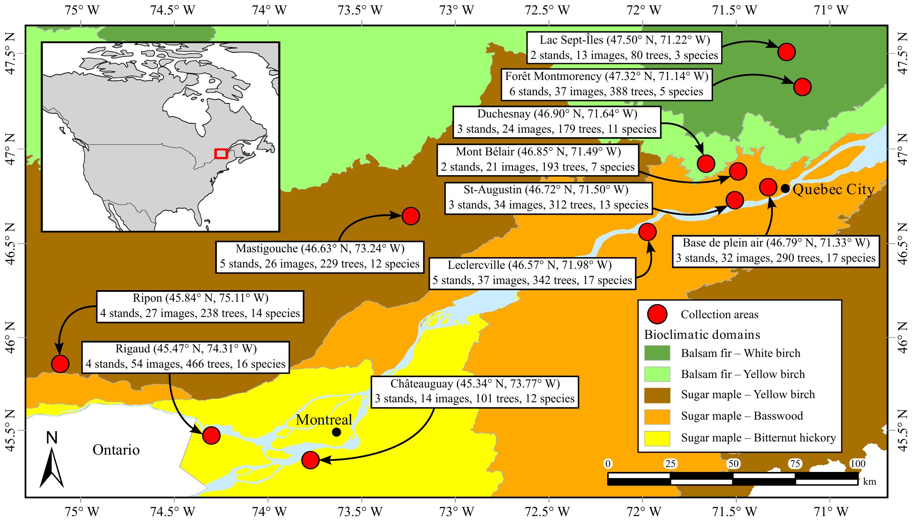

Dataset and benchmark · under-canopy perception for forestry
SilvaScenes: Challenges of Automating Tree Detection and Species Classification from Under-Canopy Images in Natural Forests
- 319
- images
- 2818
- annotated trees
- 36
- tree species
- 40
- stands
- 11
- forests
- 5
- bioclimatic domains
Abstract
Automating tree detection from under-canopy images may be feasible, but identifying their species remains an important challenge moving forward.
Interest in forestry automation is growing alongside rapid advances in deep learning. In particular, tree detection and taxonomic classification are seen as core tasks required for automating field surveys and forestry equipment. These operations must often be performed in under-canopy settings, which pose challenging conditions for perception systems, including heavy occlusion, variable lighting, and dense vegetation. Despite this necessity, current work has yet to establish the feasibility of simultaneously executing tree detection and taxonomic classification in natural forests, as available datasets primarily focus on urban settings or a limited number of species.
In response, we present SilvaScenes, a benchmark dataset of handheld, ground-level RGB images for instance segmentation of tree species in natural forests. Collected across 40 stands, 11 forests, and five bioclimatic domains in Quebec, Canada, our dataset features 2818 trees from 36 species, with segmentation masks for pixel-precise trunk detection and fine-grained species annotations from forestry experts.
We demonstrate the relevance and difficult nature of SilvaScenes by evaluating modern deep learning approaches on 1.6 MP images of our 21 most common species, showing that while trunk segmentation may be feasible, with a top mean average precision (mAP) of 70.4 % and mean average recall (mAR) of 75.9 %, species-aware segmentation remains a significant challenge, with a top mAP and mAR of only 12.3 % and 58.1 %, respectively. Through additional experiments, we highlight key challenges, namely species imbalance, tree occlusion, and generalization to new environments, and show that identification relies mainly on the trunks themselves, with surrounding trees providing additional cues. Meanwhile, higher image resolutions yield significant performance gains and will likely prove fundamental to these tasks moving forward.
The dataset
Natural forests across Quebec, photographed off-trail and labelled in the field
SilvaScenes unifies pixel-precise trunk detection and species classification in images of whole forest scenes. Collected during the summers of 2025 and 2026, it relies on forestry experts for fine-grained identification of a high diversity of species.

The basemap could not be loaded here, so only the forest markers are shown.
| Forest | Stands | Images | Trees | Species |
|---|---|---|---|---|
| Lac Sept-Îles | 2 | 13 | 80 | 3 |
| Forêt Montmorency | 6 | 37 | 388 | 5 |
| Duchesnay | 3 | 24 | 179 | 11 |
| Mont Bélair | 2 | 21 | 193 | 7 |
| Base de plein air | 3 | 32 | 290 | 17 |
| St-Augustin | 3 | 34 | 312 | 13 |
| Mastigouche | 5 | 26 | 229 | 12 |
| Leclercville | 5 | 37 | 342 | 17 |
| Ripon | 4 | 27 | 238 | 14 |
| Rigaud | 4 | 54 | 466 | 16 |
| Châteauguay | 3 | 14 | 101 | 12 |
| Total | 40 | 319 | 2818 | 36 |
36 species, collected across different environments
The dataset targets a high diversity of species. Many of them are present across multiple stands, forests, and bioclimatic domains, which increases both the environmental and intraspecific diversity of the dataset.
How it was collected and annotated
- CameraHandheld Fujifilm GFX100S, 102 MP (11 648 × 8736 px), with a GF23mmF4 lens and a 99.9° diagonal field of view.
- ScenesMainly off-trail and in leaf-on conditions, where foliage below the canopy is dense. The number of trees per image and their position vary.
- Species labelsObtained mainly in situ by forestry experts, who could rely on bark, leaves, shoots, cones, shape, and the environment.
- MasksInstance segmentation of trunks, drawn and revised by hand on the full-resolution images. Sections hidden by branches or foliage are labelled when their shape can be inferred.
- Minimum sizeTrees narrower than 128 px (median width) in the full-resolution images are not annotated.
- OcclusionEach tree has an occlusion level, estimated visually from the images in four bins from 0 to 100 %.
How it compares
Earlier under-canopy image datasets either lack species labels or focus on close-range, single-tree classification. SilvaScenes offers densely annotated scenes with instance masks and species labels for trees in natural forests.
| Dataset | Detection | Segmentation | Classification | Images | Trees | Species (evaluated) |
|---|---|---|---|---|---|---|
| ForTrunkDet | ✓ | – | – | 2716 | – | – |
| CanaTree100 | ✓ | ✓ | – | 100 | 920 | – |
| FinnWoodlands | ✓ | ✓ | ✓ | 300 | 2562 | – |
| BarkNet 1.0 | – | – | ✓ | 23 528 | 1006 | 23 (20) |
| BARK-KR | – | – | ✓ | 6918 | – | 54 (23) |
| SilvaScenes (ours) | ✓ | ✓ | ✓ | 319 | 2818 | 36 (21) |
Citation
If you found our work interesting or useful, feel free to share it and cite it. Thanks!
Our work should be published shortly. Until then, please cite the arXiv preprint below. Note that the preprint does not include our up-to-date dataset and results.
@misc{duclos2026silvascenes,
title = {SilvaScenes: Tree Detection and Species Classification from Under-Canopy Images in Natural Forests},
author = {Duclos, David-Alexandre and Guimont-Martin, William and Jeanson, Gabriel and Larochelle-Tremblay, Arthur and Lapointe, Martine and Defosse, Th{\'e}o and Moore, Fr{\'e}d{\'e}ric and Nolet, Philippe and Pomerleau, Fran{\c{c}}ois and Gigu{\`e}re, Philippe},
year = {2026},
eprint = {2510.09458},
archivePrefix = {arXiv},
primaryClass = {cs.CV},
url = {https://arxiv.org/abs/2510.09458v2},
note = {arXiv:2510.09458v2}
}